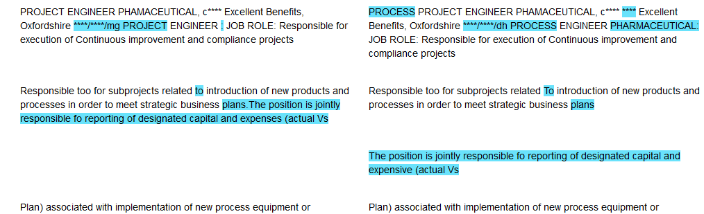

Showing Side-by-Side Diffs in Jupyter
When comparing two texts it’s useful to have a side-by-side comparison highlighting the differences. This is straightforward using HTML in Jupyter Notebooks with Python, and the inbuilt DiffLib. I used this to display job ads duplicated between different sites.
For a long document it’s important to align the sentences (otherwise it’s hard to compare the differences), and highlight the individual differences at a word level. Overall the problems are breaking up a text into sentences and words, aligning the sentences, finding word level differences and displaying them side-by-side.
Breaking text into lists of tokens
While I’ll specifically use words and sentences you could use any kind of tokenization and collection of tokens (e.g. paragraphs). I use some type annotations that you could alter if you had a different notion of token (e.g. a SpaCy Token).
from typing import List, Any, Callable, Tuple, Union
Token = str
TokenList = List[Token]I’ll do some simple splitting of strings into sentences and words. Note that these aren’t true inverses because we lose the additional whitespace, but for my application this isn’t too important.
whitespace = re.compile('\s+')
end_sentence = re.compile('[.!?]\s+')
def tokenize(s:str) -> TokenList:
'''Split a string into tokens'''
return whitespace.split(s)
def untokenize(ts:TokenList) -> str:
'''Join a list of tokens into a string'''
return ' '.join(ts)
def sentencize(s:str) -> TokenList:
'''Split a string into a list of sentences'''
return end_sentence.split(s)
def unsentencise(ts:TokenList) -> str:
'''Join a list of sentences into a string'''
return '. '.join(ts)
def html_unsentencise(ts:TokenList) -> str:
'''Joing a list of sentences into HTML for display'''
return ''.join(f'<p>{t}</p>' for t in ts)Marking Differences
Finding differences between sequences is done excellently by Python’s inbuilt difflib. It’s well designed as it can compare any sequences of items that have an equality comparison (not just strings). Unfortunately the defaults try to do some magic which you have to turn off with autojunk=false. The SequenceMatcher returns an opcode and the item ranges it applies to in each sequence. To markup the differences we just apply some markup to the ranges where the opcode is not 'equal'.
def markup_diff(a:TokenList, b:TokenList,
mark:Callable[TokenList, TokenList]=mark_span,
default_mark: Callable[TokenList, TokenList] = lambda x: x,
isjunk:Union[None, Callable[[Token], bool]]=None) -> Tuple[TokenList, TokenList]:
"""Returns a and b with any differences processed by mark
Junk is ignored by the differ
"""
seqmatcher = difflib.SequenceMatcher(isjunk=isjunk, a=a, b=b, autojunk=False)
out_a, out_b = [], []
for tag, a0, a1, b0, b1 in seqmatcher.get_opcodes():
markup = default_mark if tag == 'equal' else mark
out_a += markup(a[a0:a1])
out_b += markup(b[b0:b1])
assert len(out_a) == len(a)
assert len(out_b) == len(b)
return out_a, out_bIn this case our method signature is probably slightly wrong; we’re actually outputting lists of marked up tokens, but I haven’t thought hard enough about what this looks like. In my case I just use some string abuse to markup with HTML. We could markup individual words by color.
def mark_text(text:str) -> str:
return f'<span style="color: red;">{text}</span>'
def mark_span(text:TokenList) -> TokenList:
return [mark_text(token) for token in text]Or we could markup the whole span with a background:
def mark_span(text:TokenList) -> TokenList:
if len(text) > 0:
text[0] = '<span style="background: #69E2FB;">' + text[0]
text[-1] += '</span>'
return textAligning Sentences
To align the sentences we need to align our TokenLists, but this time our tokens are sentences. We can do this simply by filling in padding around deleted or inserted sentences.
def align_seqs(a: TokenList, b: TokenList, fill:Token='') -> Tuple[TokenList, TokenList]:
out_a, out_b = [], []
seqmatcher = difflib.SequenceMatcher(a=a, b=b, autojunk=False)
for tag, a0, a1, b0, b1 in seqmatcher.get_opcodes():
delta = (a1 - a0) - (b1 - b0)
out_a += a[a0:a1] + [fill] * max(-delta, 0)
out_b += b[b0:b1] + [fill] * max(delta, 0)
assert len(out_a) == len(out_b)
return out_a, out_bDisplaying Side by Side
When we have aligned sentences we can use CSS to display two sequences side by side. There’s some issue in Jupyter Notebooks that causes the first pair of paragraphs to not be aligned, so this contains a workaround adding two blank paragraphs. If you wanted to render this in a webbrowser in another way you’d remove these.
from itertools import zip_longest
def html_sidebyside(a, b):
# Set the panel display
out = '<div style="display: grid;grid-template-columns: 1fr 1fr;grid-gap: 20px;">'
# There's some CSS in Jupyter notebooks that makes the first pair unalign. This is a workaround
out += '<p></p><p></p>'
for left, right in zip_longest(a, b, fillvalue=''):
out += f'<p>{left}</p>'
out += f'<p>{right}</p>'
out += '</div>'
return outPutting it all together
Finally we can combine all these functions to create the diffs:
- Escape any HTML characters so that they will display properly in HTML
- Align the texts at a sentence level
- Markup the differences between the tokens in each pair of aligned sentences
- Output the markedup and aligned sentences as side-by-side HTML
import html
def html_diffs(a, b):
a = html.escape(a)
b = html.escape(b)
out_a, out_b = [], []
for sent_a, sent_b in zip(*align_seqs(sentencize(a), sentencize(b))):
mark_a, mark_b = markup_diff(tokenize(sent_a), tokenize(sent_b))
out_a.append(untokenize(mark_a))
out_b.append(untokenize(mark_b))
return html_sidebyside(out_a, out_b)Finally we can have a shortcut to display them in a Jupyter notebook:
from IPython.display import HTML, display
def show_diffs(a, b):
display(HTML(html_diffs(a,b)))Then we can get nice looking side-by-side diffs.
